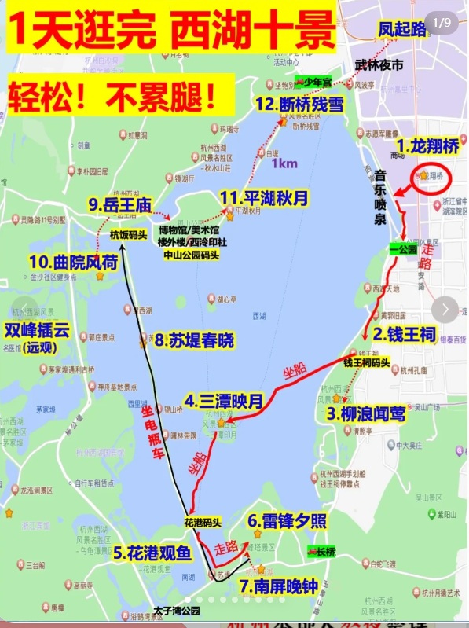

旅行
四川
九寨沟
四姑娘山
峨眉山
三星堆
稻城亚丁
都江堰
若尔盖
熊猫基地 早上去，熊猫下午休息
泸沽湖
乐山大佛
青城山 远
太古里
南京 √
交通
保定-南京
- 保定-石家庄-南京
- 保定-石家庄
- 石家庄-南京
景点
- 南京博物院 梧桐大道 音乐台 中山陵 √
- 秦淮河 夫子庙 老门东 √
- 南京大屠杀纪念馆 √

扬州
- 瘦西湖
- 个园
美食
- 扬州炒饭
镇江
- 北固楼 何处望神州，满眼风光北固楼
- 甘露寺 刘备招亲
- 西津渡 古街
- 金山寺 白娘子
常州
苏州 √
交通
南京-苏州
景点
苏州博物馆
拙政园 √
平江路 √
双塔市集
山塘 √
留园
寒山寺
上海
嘉兴
交通
苏州-嘉兴（西塘）
- 汽车
- 火车 绕道上海太远
景点
- 西塘 （8点前5点后免费） 、南浔（免费） 乌镇
杭州
交通
嘉兴(西塘)-杭州
西塘 - 嘉善站
嘉善 - 杭州 火车
景点
西湖（龙翔桥地铁下车） 划船 （摇橹船，公交船）
南宋御街
灵隐寺
绍兴
交通
杭州-绍兴
火车/汽车
景点
- 书圣故里
- 鲁迅故里
美食
- 黄酒棒冰
千岛湖
黄山
交通
绍兴-黄山
绍兴北站 - 黄山北站 - 乘大巴 到景区